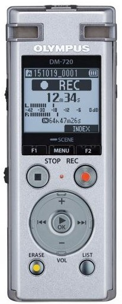

Audio Input Devices
Audio-input devices convert sounds into a form that can be processed by the system unit. By far the mst widely used audio-input devices in the microphone. Audio input can take many forms, including the human voice and music.
Voice Recoginition Systems
Voice recoginition systems use a microphone, a sound card, and special software. These systems allow users to operate computers and other devices as well as to create documents using voice commands. As discussed in Chapter 4, most smartphones include a digital assisatnt that uses voice recoginition to accept voice commands to control operations. Windows phones come with Cortana, Google phones come with Google Now and Apple phones come with Siri. These voice recoginition systems, see Figure 6-14, can perform any number of operations, including scheduling events on your calendar, composing simple text messages, and looking up facts on the web. Specialised portable voice recorders are widely used by doctors, lawyers, and others to record dictation. These devices are able to record for several hours before connecting to a computer running voice recoginition software to edit, store, and print the dictated information. Some systems are even able to translate dictation from one language to another, such as from English to Japanese.
Figure 6-14 A portable voice recoginition system
Tips
Have you ever trouble communicating with someone who does not speak English? If so, Google Translate may be
just what you need.
1. Go to translate.google.com.
2. Using the buttons at the top, select the language you will be speaking, followed by the language
you want your words translated to.
3. Click the microphone icon in the box on the left, and begin speaking clearly into your microphone.
In a few seconds, you will see the translated text in the box on the right.
4. Click the speaker icon in the box on the right to hear the transiation.
Box 6.1
Concept Check
1. What do you mean by audio input devices?
2. What are voice recoginition system?
Think About It
Understand the working of Alexa, Siri, Google Now and Cortana. What according to you will be the next level
of development in these devices? Discuss.